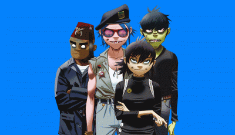

BIOGRAPHIE
Gorillaz est un groupe musical britannique dit « virtuel », formé en 1998 par Damon Albarn et Jamie Hewlett. Il est composé de 2D au chant et au piano ; Murdoc Niccals à la basse ; Russel Hobbs à la batterie ; et Noodle à la guitare.
| NOM | Gorillaz |
|---|---|
| GENRE | Rock Alternatif |
| STATUT | Actif |
| DATE DE FORMATION | 1998 |
| PAYS | Royaume-Uni |